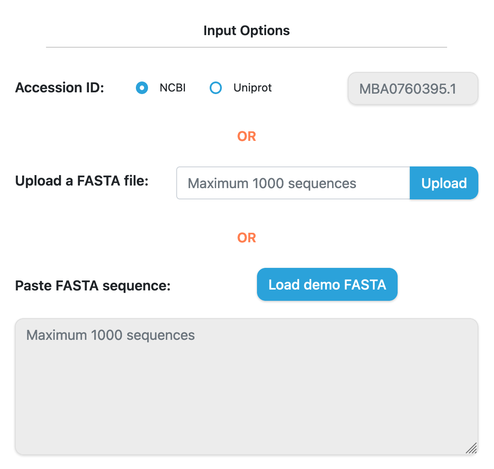
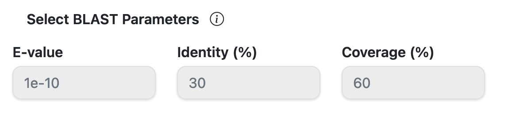
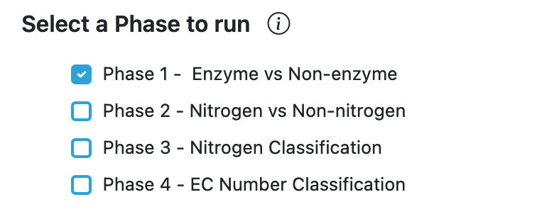
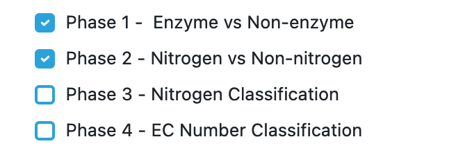
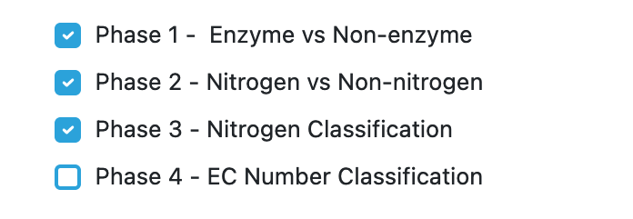
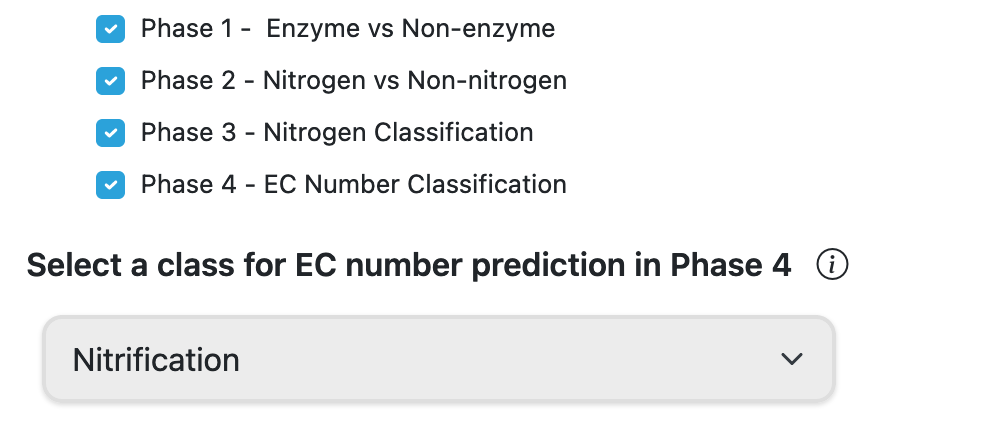
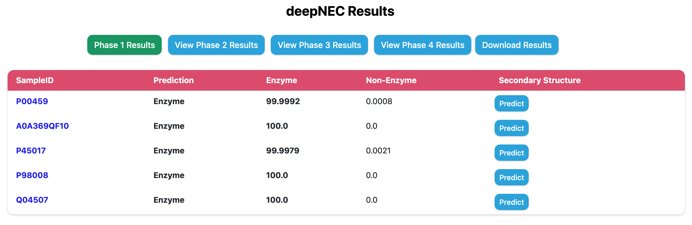
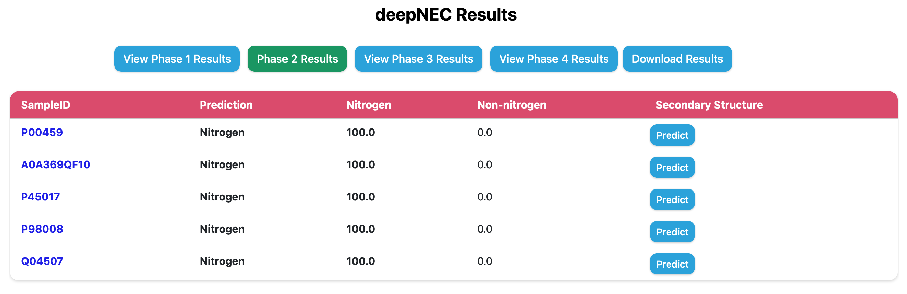
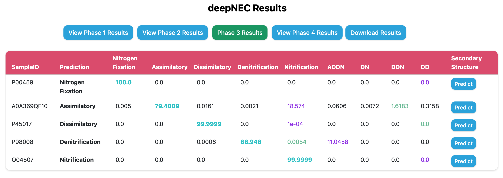
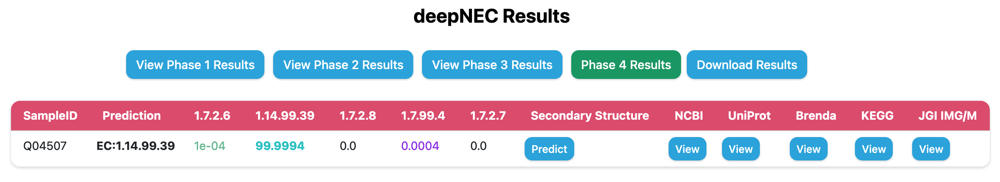

deepNEC-2.0 Tutorial
Introduction
Help section page of deepNEC-2.0, here you will find a step by step guide to submit and display the result of an analysis, as well as the different options regarding prediction on deepNEC-2.0 and what each parameter means. If you have any questions that are not covered in this page please refer to FAQ page or send an email to naveen.duhan@usu.edu. For this tutorial we will use the Demo data, so if you want to replicate the results obtained in this tutorial just click in the load Demo FASTA link.
This website is free and open to all users and there is no login requirement.Data input
deepNEC-2.0 supports FASTA format. You can either upload a file or paste your sequences in the text area below or provide NCBI/UniProt accession in the text box below. You can upload amino acid sequences after selecting appropriate query sequence type below.
Prediction Strategy Options
There are three prediction strategy available in deepNEC-2.0. There is an icon with general information about the tool and a brief explanation on how it works.
- DNN: Deep Neural Netwrok based prediction uses trained model for prediction.
- Homology: Similarity based prediction. Uses blast /diamond(fast) for finding similarity.
- DNN+Homology: This approach combines results of Deep Neural Network based prediction and Similarity based prediction.
You can also select BLAST option to use for prediction. BLAST option uses traditional ncbi standalone BLAST algorithm while Diamond BLAST uses a accelerated BLAST algorithm.
You can also select some alignment filters (coverage, identity and e-value) for both Host and Pathogen data sets.
e-value: Value that represent if an aligment is due to chance, lower means more confidence in the aligment.
coverage: How much of the database protein the query protein have to cover (percentually).
identity: How identical the database protein the query protein needs to be (percentually).
Prediction Phases
deepNEC-2.0 runs three phases for nitrification-related enzyme prediction. Users can select any phase for prediction and theire preceeding phases will be automatically selected. Phase III will run by default. There is an icon with general information about the tool and a brief explanation on how it works.
Phase I: This is first phase where a query sequence is being predicted as enzyme or non-enzyme
Phase II: This phase will run phase1 first followed by phase2 where a query sequence is first predicted as enzyme or non-enzyme followed by prediction of enzyme as nitrogen metabolism or non-nitrogen metabolsim.
Phase III: This phase will execute Phase1 and Phase2 followed by classifying nitrogen metabolism-related enzymes in 9 classes.
Phase IV: This phase will execute Phase1, Phase2 and Phase3 followed by classifying EC number of class predicted in Phase3.
Run Prediction
Run Prediction section contains an input box in which you can provide an email to receive a link to your results when they are done. You can reset the form. Run prediction button will execute the prediction on deepNEC-2.0 server.
Output Example
The result table will change depending of the prediction phase and strategy used. On the top, you will have download results button, which download the comprehensive table result in tab-delimited format.
   View buttons provides links to different biological databases like: NCBI, UniProt, BRENDA, KEGG, JGI IMG/M. It also provides secondary structure prediction feature also.
Browser Compatibility
deepNEC-2.0 have been tested in the following setups.
| OS | Version | Chrome | Firefox | Safari | Edge |
|---|---|---|---|---|---|
| Linux | Ubuntu 22.04 | 108.0.5359.71 | 112.0.2 | n/a | 113.0.1774.35 |
| MacOS | Ventura 13.3.1 (a) | 108.0.5359.71 | 112.0.2 | 16.4 | 113.0.1774.35 |
| Windows | 10 | 108.0.5359.71 | 112.0.2 | not tested | 113.0.1774.35 |